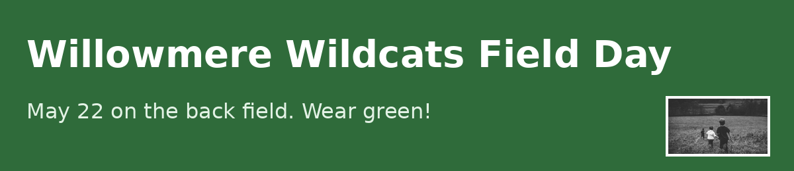
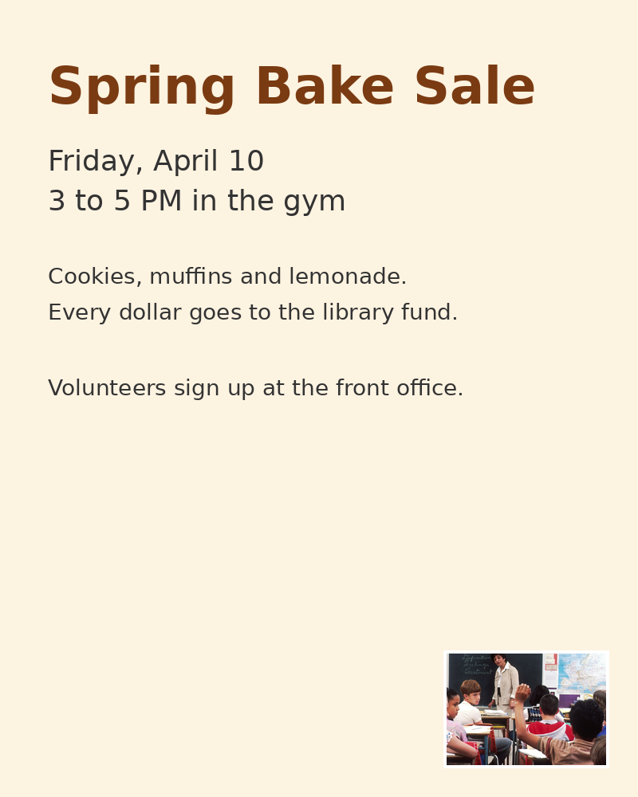
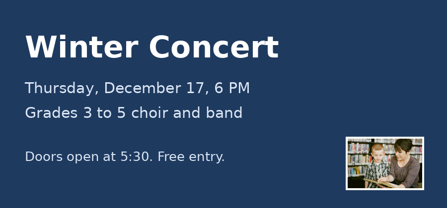
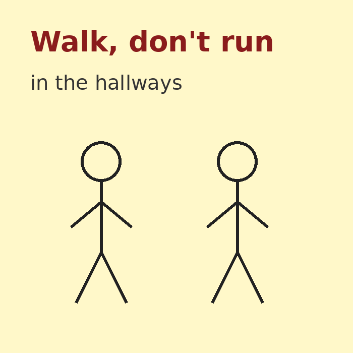
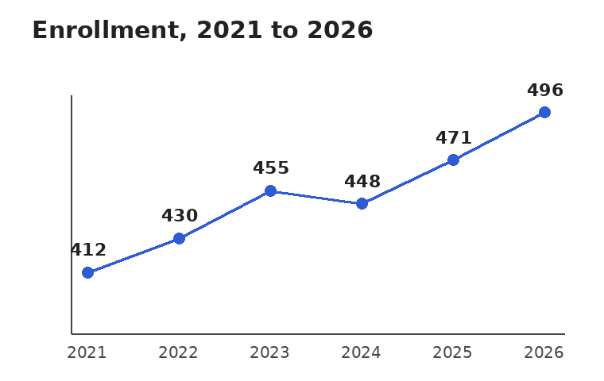
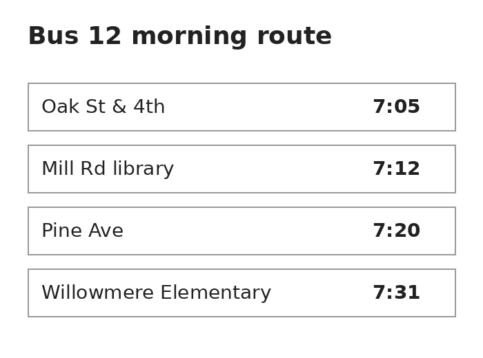

Spring events
Flyers from the front office, posted as they were sent to us.

Bake sale

Winter concert

Hallway safety

Enrollment

Bus 12

Flyers from the front office, posted as they were sent to us.





